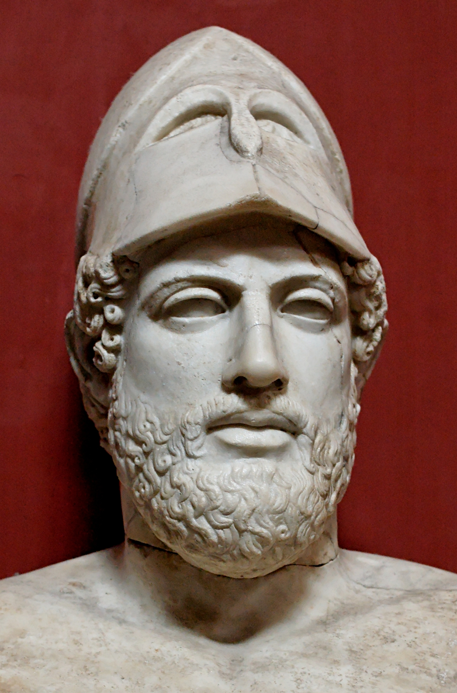
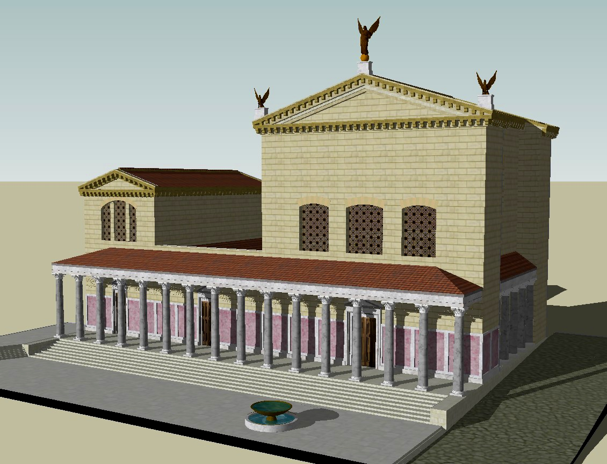
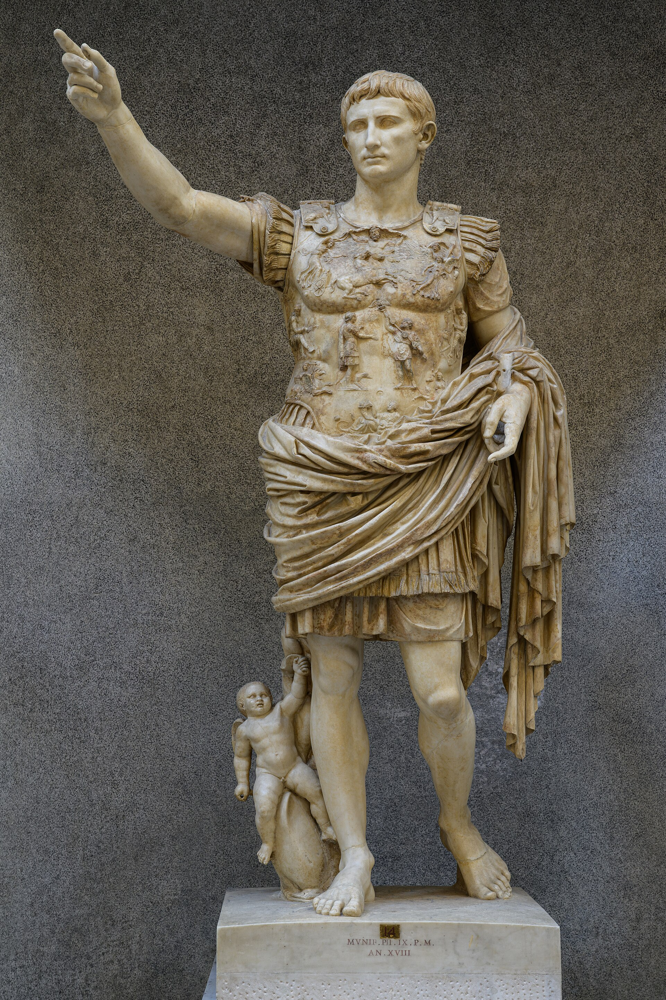
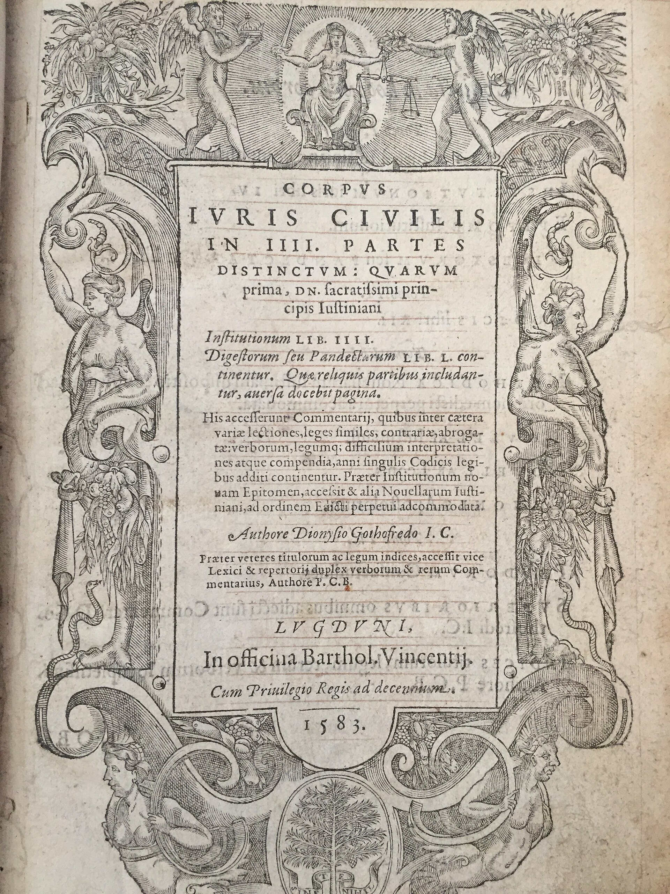

Grecia y Roma: cuna del pensamiento político
Grecia
Atenas · Siglo VI a.C.
Cuna de la demokratía: el poder del pueblo ejercido directamente en el ágora y la ekklesía.
Haz clic para girar
Instituciones atenienses
- Ágora
- Plaza pública donde los ciudadanos se reunían para debatir asuntos comunes; espacio físico y simbólico de la vida cívica, corazón comercial, religioso y político de la polis.
- Ekklesía
- Asamblea popular soberana con poder legislativo; votaba leyes, declaraba guerras, firmaba tratados y elegía magistrados. Se reunía unas cuarenta veces al año en la colina del Pnix.
- Ciudadanía restringida
- Solo varones libres, mayores de 20 años, hijos de padre y madre atenienses. Quedaban excluidos mujeres, metecos (extranjeros residentes) y esclavos: apenas un diez por ciento de la población.
- Democracia directa
- Los ciudadanos participaban personalmente en las decisiones, sin representantes intermedios. El sorteo y la rotación de cargos impedían la concentración permanente del poder.
Roma
República · 509 a.C. — 212 d.C.
Inventora de la res publica y del Senado: gobierno mixto que equilibraba cónsules, patricios y asambleas.
Haz clic para girar
Instituciones romanas
- Senado
- Cuerpo de patricios y exmagistrados con poder consultivo, legislativo y de política exterior; símbolo de continuidad institucional durante más de mil años.
- Cónsules
- Dos magistrados supremos elegidos anualmente que ejercían el poder ejecutivo y comandaban los ejércitos. Su paridad y corta duración limitaban ambiciones personales.
- República (res publica)
- Forma de gobierno mixta que combina elementos monárquicos (cónsules), aristocráticos (Senado) y democráticos (asambleas). Modelo teorizado por Polibio y Cicerón.
- Ciudadanía ampliada
- Progresivamente extendida a los pueblos conquistados mediante la civitas; en el 212 d.C. Caracalla la concedió a todos los hombres libres del Imperio mediante la Constitutio Antoniniana.






Conceptos clave comunes
Ley
Sufragio
Participación
Deber cívico
Representación
Estado de Derecho
Democracia
1 / 15